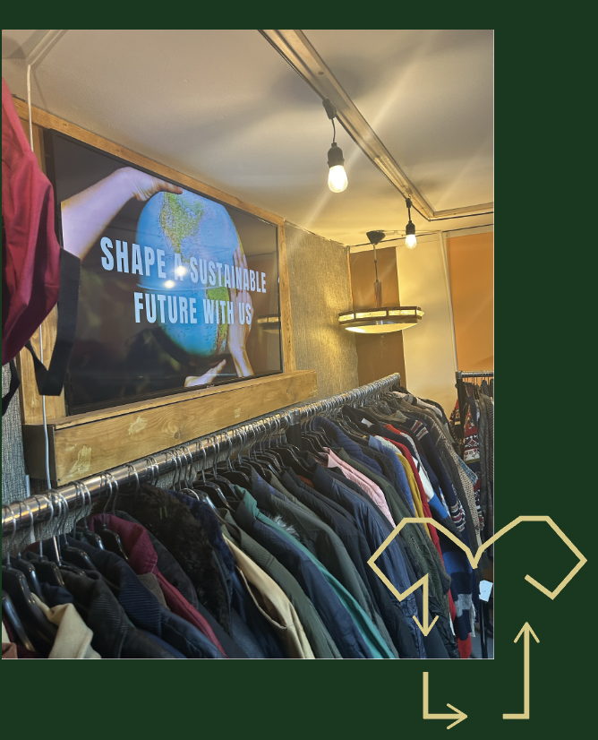

DUURZAAM VOOROP
Vintage winkels blijven duurzaam door tweedehands kleding te bieden, bewust te selecteren, lokale economieën te ondersteunen, bewustzijn te creëren en samenwerkingen te bevorderen. Ontdek unieke stijl met een groen hart bij "Bij Ons Vintage".